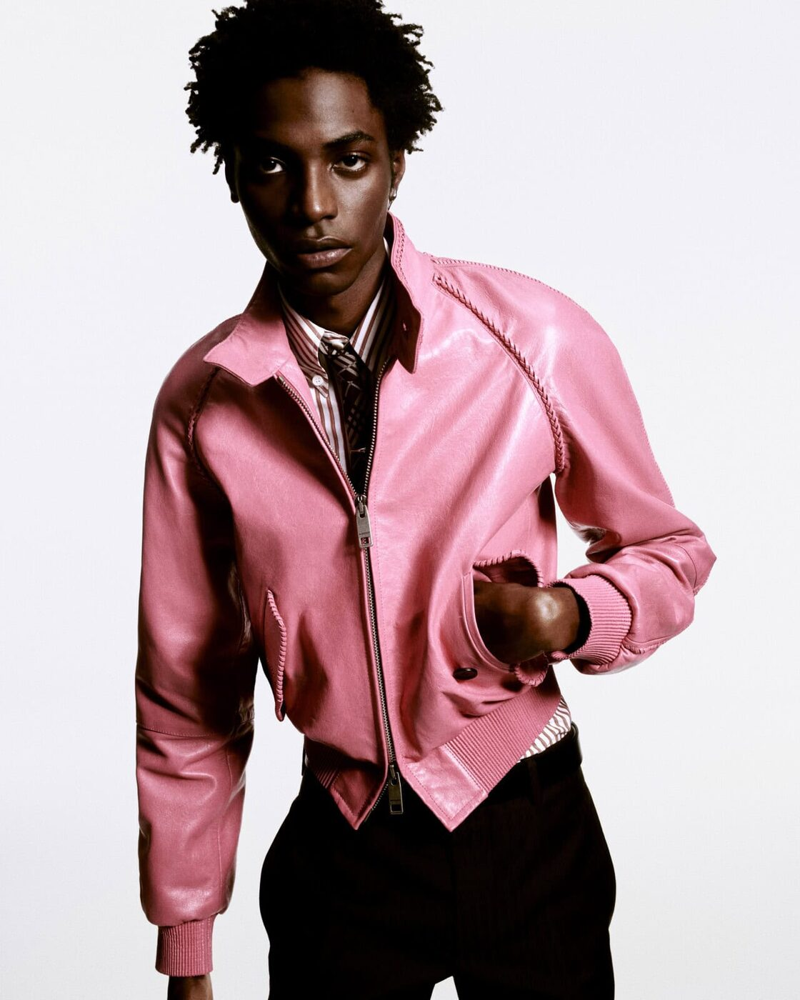

Something has shifted in the campaign image. This Spring/Summer 2026 season, the photographs that land in our feeds and on our billboards feel less like advertisements and more like arguments — each one a thesis on what a fashion house might mean now, authored by a new generation of creative directors making their first visual statements to the world.
The SS26 campaign season arrives amid what can only be described as fashion’s great reset. At Prada, Burberry, Valentino, Tom Ford and beyond, newly installed creative directors are translating runway propositions into the fixed, reproducible image — and discovering, in the process, that the campaign photograph remains the most potent instrument of brand identity. A runway show disappears. A campaign endures. It is the image that travels, that gets pinned to bedroom walls and saved to camera rolls, that outlives the garment it was made to sell. This season, the directors know it, and they are using the format accordingly.
Prada: Image of an Image
The most intellectually ambitious campaign of the season belongs, unsurprisingly, to Prada. Photographed by Oliver Hadlee Pearch in collaboration with the American artist Anne Collier and creative director Ferdinando Verderi, the Spring/Summer 2026 campaign is titled “Image of an Image” — a phrase that functions as both description and manifesto. The images depict Hunter Schafer, Carey Mulligan and Damson Idris not simply wearing clothes but inhabiting a layered visual architecture in which photographs appear within photographs, surfaces reflect and refract, and the act of looking is made visible as a subject in itself.
Collier’s influence is unmistakable. The artist has spent two decades examining how images circulate, accumulate meaning and lose it again — her studio practice involves rephotographing found images, stripping them of context, returning them to a state of pure visual information. Applied to the Prada campaign, this methodology produces something genuinely unusual: a fashion advertisement that interrogates the very idea of a fashion advertisement. The clothes — sharp-shouldered coats, liquid-hemmed skirts, those architectural bags — are present and desirable, but they exist within a system that refuses to let you consume them passively. You must look at the looking. It is Miuccia Prada and Raf Simons’s intellectualism rendered as campaign strategy, and it works precisely because it does not simplify.
Photography by Oliver Hadlee Pearch, courtesy of Prada / 10 Magazine
Burberry: Twiggy returns
If Prada’s campaign is a meditation on the image, Burberry’s is a love letter to one. Daniel Lee’s Spring/Summer 2026 campaign, photographed by Sam Rock with creative direction by Lane & Associates, brings Twiggy back to the centre of British fashion — not as a nostalgic footnote but as a living bridge between the mod revolution of the 1960s and whatever Burberry is becoming now. She appears alongside Sonny Ashcroft, Albert Cocker, Sora Choi, Ella Dalton and Maya Wigram, and the generational contrast is the point: Lee is building a house that honours lineage without being imprisoned by it.
Rock’s photography is characteristically warm and unforced, shot with the kind of natural light that makes trench coats look like they belong to the wearer rather than the brand. The 1960s references are present but never costumey — a geometric earring here, a cropped proportion there, the particular way Twiggy holds her chin. It is a campaign that understands heritage as a living practice rather than an archive to be raided, and in Lee’s hands, Burberry’s Britishness feels earned rather than performed.

Burberry Spring/Summer 2026 — Twiggy returns. Photography by Sam Rock, courtesy of Burberry / 10 Magazine
Valentino: suspended in air
Willy Vanderperre’s campaign for Valentino is the season’s most arresting in purely visual terms. Shot in historic interiors — frescoed ceilings, marble floors, the accumulated grandeur of centuries — the images depict figures suspended in mid-air, caught between falling and floating, their Valentino garments billowing around them like the drapery of Baroque ceiling paintings. It is a strikingly literal translation of Alessandro Michele’s runway thesis: that fashion is an act of vulnerability, that beauty requires surrender, that we are all held aloft by invisible threads of interdependence.
Jonathan Kaye’s styling reinforces the otherworldliness — the clothes are presented as costumes for an existence that does not quite obey the laws of physics. Yet for all its theatricality, the campaign possesses an emotional undertow. The suspended figures look not triumphant but tender, not powerful but exposed. Michele has always been interested in the space between protection and revelation, and Vanderperre captures it here with an almost painterly sensitivity. These are not photographs of clothes. They are photographs of the feeling clothes can produce.
In a season of new creative directors, the campaign image has become the true first collection — not the clothes on the runway, but the story those clothes are asked to tell when the lights go down and the photographer arrives.
The Splendid EditMiu Miu: On Cloud Nine
Jamie Hawkesworth’s “On Cloud Nine” campaign for Miu Miu is the season’s most purely joyful proposition. Olivia Rodrigo and the French actress Suzanne Lindon appear in a dreamlike Rococo setting — pastel-washed interiors, tumbling florals, the kind of gilded excess that Miu Miu has always worn more comfortably than its parent house. Hawkesworth, whose eye for natural gesture and unguarded expression has made him the most sought-after campaign photographer of the past five years, finds in this ornate backdrop exactly the tension his work thrives on: real bodies in unreal spaces, contemporary faces framed by eighteenth-century mouldings.
Rodrigo brings a quality of unselfconscious absorption that elevates the images beyond celebrity endorsement into something closer to portraiture. She is not posing for Miu Miu; she is existing inside a Miu Miu world, and the distinction matters. Lindon, meanwhile, contributes a cooler, more European register — her stillness a counterpoint to Rodrigo’s warmth, the two of them together creating the kind of productive contrast that campaign casting, at its best, can achieve.
Tom Ford: nocturnal
At Tom Ford, Haider Ackermann’s debut campaign stakes out territory that is unmistakably his own while paying respect to the house’s legacy of sensuality. Photographed by Drew Vickers in nocturnal flash — the harsh, confrontational light of a paparazzo’s camera or a nightclub doorway — the images feature Susie Cave in a series of richly textured garments that seem to absorb and redirect the light. Velvet, leather, embroidered silk: Ackermann has always been a designer who thinks through surface, and Vickers’s flash photography makes that surface hyper-present, almost tactile.
The campaign is an exercise in controlled desire. Where Tom Ford’s own campaigns often courted provocation, Ackermann offers something more oblique — a nocturnal world in which texture substitutes for skin, in which the seduction happens at the level of material rather than body. It is a subtle but significant repositioning, and it suggests that Ackermann understands the house well enough to move it without breaking it.
Giorgio Armani: a tribute at home
Oliver Hadlee Pearch appears again, this time in an entirely different register, photographing Giorgio Armani’s Spring/Summer 2026 campaign at the designer’s own Milan residence. Vittoria Ceretti and Clément Chabernaud move through rooms that feel simultaneously private and monumental — the particular Armani quality of restrained grandeur, of luxury that whispers rather than shouts. The campaign functions as a tribute not to the clothes alone but to the world they inhabit, the ecosystem of taste and discipline that Armani has built over half a century.
There is an elegiac quality to these images that distinguishes them from the season’s more conceptually driven campaigns. Pearch, who can be playful and arch in other contexts, here adopts a mode of quiet observation — the light falls softly, the colours are muted to the point of near-monochrome, and the models carry themselves with the unhurried grace of people who know they belong exactly where they are. It is campaign photography as architecture: every element in its place, nothing extraneous, the whole greater than the sum of its parts.
Chloé: dawn to dusk
Sam Rock’s second major campaign of the season takes Chloé to the coast. Awar Odhiang leads a cast of women across elemental landscapes — salt-bleached cliffs, tidal pools, the kind of windswept terrain where fashion photography rarely ventures without looking foolish. Rock avoids foolishness by refusing to romanticise the setting; his camera treats the landscape as a collaborator rather than a backdrop, allowing the light to shift from the blue-grey of dawn to the amber of dusk across the campaign’s sequence of images.
The effect is temporal as much as spatial. The Chloé woman, in this telling, does not exist in a single frozen moment but across a day — she moves, she changes with the light, she is shaped by the environment as much as by the clothes. It is an approach that aligns with Chloé’s broader identity as a house that has always valued freedom over formality, and Rock’s instinct for unposed intimacy makes the whole thing feel not like a campaign but like a memory of a very good day.
Taken together, the SS26 campaigns describe a season in which the fashion image has become newly restless, newly ambitious, newly willing to treat the viewer as an interlocutor rather than a consumer. The great reset is not only happening on the runway. It is happening in the photographs that follow — in the choice of photographer, in the casting, in the willingness to let an image ask a question it does not intend to answer. This is what a turning point looks like: not a single decisive image, but a whole season of them, each one interrupting the last.